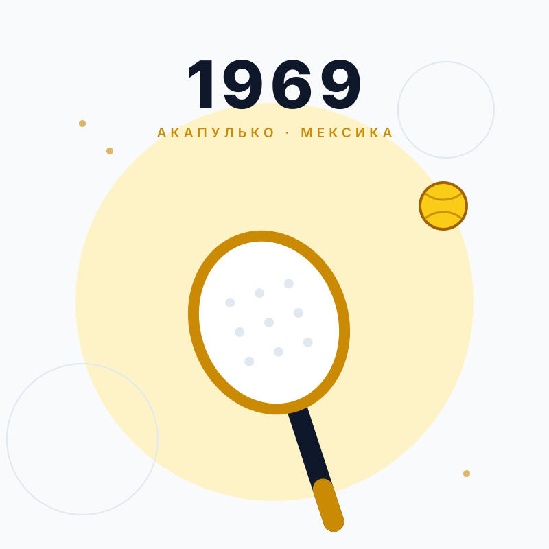
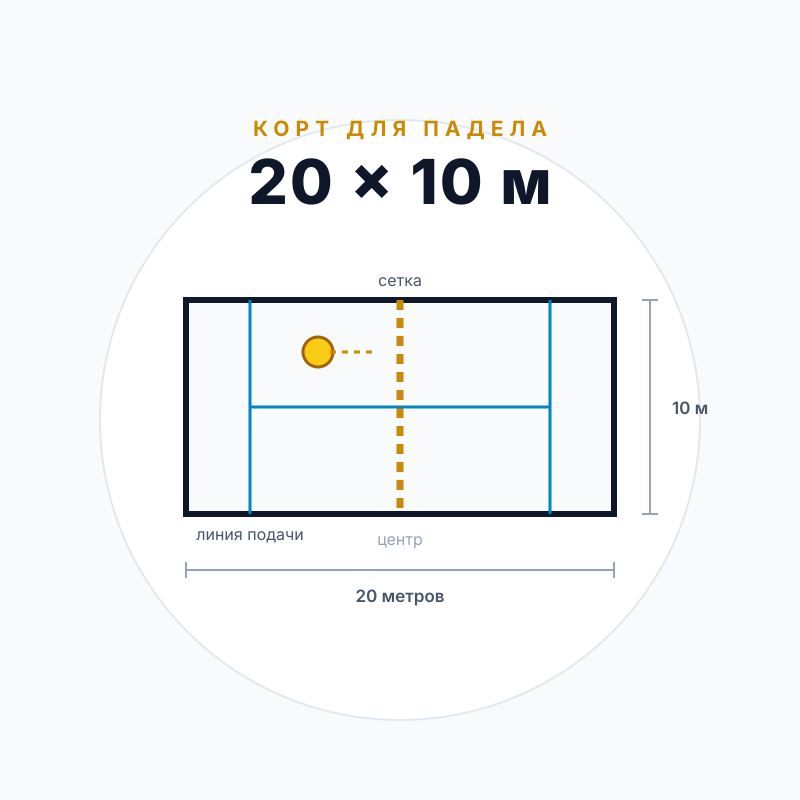
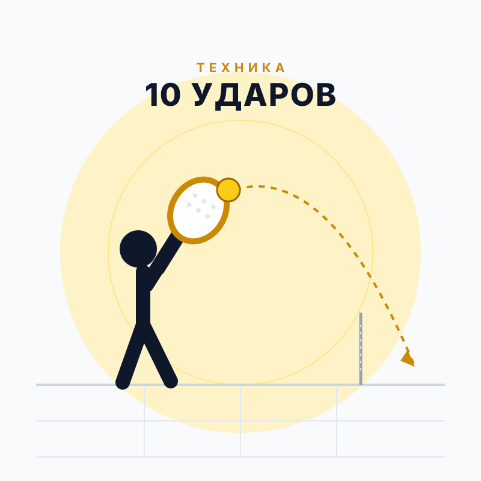
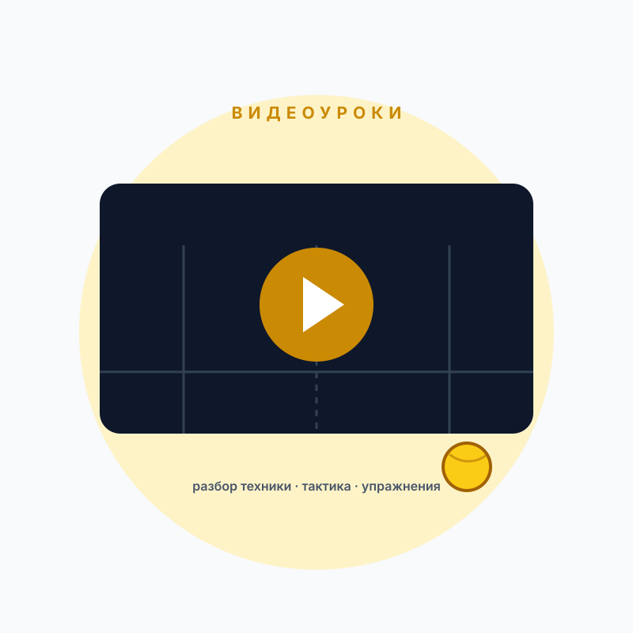
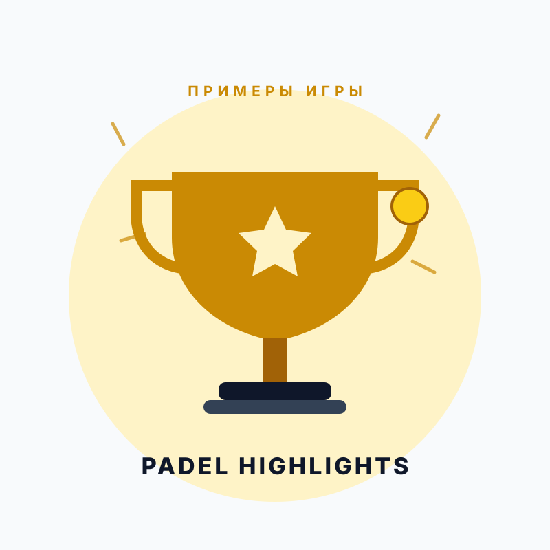

Падел: игра,
которая захватила мир
История, правила, техника и лучшие матчи — всё, что нужно, чтобы понять падел, полюбить его и выйти на корт.
Что такое падел
Падел — парный ракеточный вид спорта, в котором мяч можно отбивать после отскока от стеклянных стен. Корт небольшой, розыгрыши длинные, а порог входа — один из самых низких среди всех ракеточных игр.
Игра 2 на 2
Падел всегда играют парами. Это делает игру тактической, социальной и не такой утомительной, как одиночный теннис.
Стены — часть игры
Мяч можно возвращать после отскока от стекла и металлической сетки. Отсюда — неожиданные углы и длинные розыгрыши.
Ракетка без струн
Сплошная перфорированная ракетка с ремешком на запястье. Длина — до 45,5 см, вес обычно 350–380 граммов.
Счёт как в теннисе
15, 30, 40, гейм, сет до шести геймов. При счёте 40:40 играется решающее очко — «золотой мяч».
Разделы
Пять шагов от первого знакомства до осмысленной игры.

История игры
Как падел появился в Мексике и превратился в один из самых быстрорастущих видов спорта в мире.

Правила игры
Корт, подача, счёт, игра у стен и главные ошибки — коротко и по делу, с наглядной схемой.

Основные удары
Форхенд, бэкхенд, волей, бандеха, вибора, смэш, глобо и другие удары — с описанием и схемами.

Обучающие видео
Проверенные видеоуроки: техника, тактика и упражнения от ведущих тренеров и школ падела.

Видео с примерами игры
Лучшие розыгрыши и подборки матчей профессионального падела — учитесь, наблюдая за звёздами.
С чего начать
Четыре шага, которые сэкономят вам первые месяцы.
- Возьмите одну тренировку с тренером. Поставьте хват, стойку и подачу — самостоятельно это занимает в разы дольше.
- Выучите три базовых удара. Форхенд, бэкхенд и волей закрывают большую часть игровых ситуаций на любительском уровне.
- Играйте с равными. Первые месяцы важнее регулярность, чем результат: 2–3 игры в неделю дают быстрый прогресс.
- Смотрите профессиональный падел. Обращайте внимание не на эффектные смэши, а на перемещения и выбор позиции.
* Оценка количества кортов в мире — по данным Международной федерации падела (FIP) и отраслевых отчётов 2024–2025 годов; цифры постоянно растут.